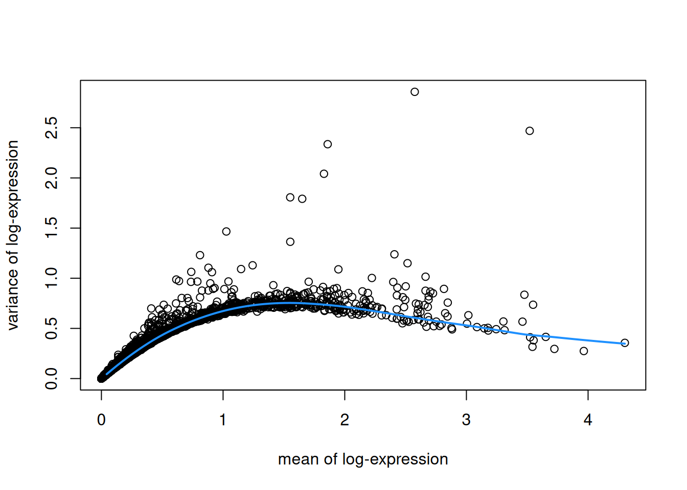

library(SpatialExperiment)
spe <- readRDS("spe_logcounts.rds")8 Feature selection
8.1 Overview
Here we apply feature selection methods to identify highly variable genes (HVGs) or spatially variable genes (SVGs), which can then be investigated individually or used as the input for further downstream analyses such as clustering.
8.2 Load data from previous steps
We start by loading the data object(s) saved after running the analysis steps from the previous chapters. Code to re-run the previous steps is shown in condensed form in Chapter 4.
8.3 Highly variable genes (HVGs)
We use methods from scran (Lun, McCarthy, and Marioni 2016) to identify a set of top highly variable genes (HVGs), which can be used to define major cell types. These methods were originally developed for single-cell RNA sequencing (scRNA-seq) data, so here we are making the assumption that spots can be treated as equivalent to cells.
Note that HVGs are defined based only on molecular features (i.e. gene expression), and do not take any spatial information into account. If the biologically meaningful spatial information in this dataset mainly reflects spatial distributions of cell types, then relying on HVGs for downstream analyses may be sufficient. However, many datasets contain further spatial structure that is not captured in this way, which may be investigated using spatially-aware methods such as identifying spatially variable genes (SVGs).
To identify HVGs, we first remove mitochondrial genes, since these are very highly expressed in this dataset and are not of main biological interest.
# identify mitochondrial genes
is_mito <- grepl("(^MT-)|(^mt-)", rowData(spe)$gene_name)
table(is_mito)## is_mito
## FALSE TRUE
## 33525 13# remove mitochondrial genes
spe <- spe[!is_mito, ]
dim(spe)## [1] 33525 3524Then, we apply methods from scran. This gives us a list of HVGs, which can be used for further downstream analyses. The parameter prop defines how many HVGs we want. For example prop = 0.1 returns the top 10% of genes.
library(scran)
# fit mean-variance relationship
dec <- modelGeneVar(spe)
# visualize mean-variance relationship
fit <- metadata(dec)
plot(fit$mean, fit$var,
xlab = "mean of log-expression", ylab = "variance of log-expression")
curve(fit$trend(x), col = "dodgerblue", add = TRUE, lwd = 2)
# select top HVGs
top_hvgs <- getTopHVGs(dec, prop = 0.1)
length(top_hvgs)## [1] 14388.4 Spatially variable genes (SVGs)
Alternatively, we can apply methods to identify spatially variable genes (SVGs) instead of HVGs. Here, we define SVGs as any genes with spatially correlated patterns of expression across the tissue area.
Several methods to identify SVGs in ST data have recently been developed, which each have various methodological and computational tradeoffs. These include:
nnSVG: available as an R package from Bioconductor and described by Weber et al. (2023)
SPARK-X: available as an R package from GitHub and described by Zhu, Sun, and Zhou (2021)
SPARK: available as an R package from GitHub and described by Sun, Zhu, and Zhou (2020)
SpatialDE: available as a Python package from GitHub and described by Svensson, Teichmann, and Stegle (2018)
Alternatively, standard statistical metrics such as Moran’s I statistic or Geary’s C statistic may also be used to rank genes by their observed spatial autocorrelation. However, the methods above tend to be more sensitive, since they have been developed for the specific properties of ST data.
8.4.1 nnSVG
Here, we demonstrate a short example showing how to identify a set of top SVGs using nnSVG (Weber et al. 2023). This method is available in Bioconductor and can be easily integrated into Bioconductor-based workflows.
In this example, we run nnSVG using a small subset of the dataset for faster runtime. We select a subset by subsampling on the set of spots and including stringent filtering for low-expressed genes. A full analysis using all spots for this dataset and default filtering parameters for Visium data from human brain tissue takes around 45 minutes for one Visium sample on a standard laptop.
# subsample spots for faster runtime in this example
# note: skip this step in full analysis
n <- 100
set.seed(123)
ix <- sample(seq_len(n), n)
spe_nnSVG <- spe[, ix]
# filter low-expressed and mitochondrial genes
# using stringent filtering for faster runtime in this example
# note: use default filtering in full analysis
spe_nnSVG <- filter_genes(
spe_nnSVG, filter_genes_ncounts = 10, filter_genes_pcspots = 3
)## Gene filtering: removing mitochondrial genes## removed 0 mitochondrial genes## Gene filtering: retaining genes with at least 10 counts in at least 3% (n = 3) of spatial locations## removed 33353 out of 33525 genes due to low expression# re-calculate logcounts after filtering
spe_nnSVG <- logNormCounts(spe_nnSVG)# investigate results
# show results
head(rowData(spe_nnSVG), 3)## DataFrame with 3 rows and 18 columns
## gene_id gene_name feature_type subsets_mito
## <character> <character> <character> <logical>
## ENSG00000074800 ENSG00000074800 ENO1 Gene Expression FALSE
## ENSG00000171603 ENSG00000171603 CLSTN1 Gene Expression FALSE
## ENSG00000162545 ENSG00000162545 CAMK2N1 Gene Expression FALSE
## sigma.sq tau.sq phi loglik runtime mean
## <numeric> <numeric> <numeric> <numeric> <numeric> <numeric>
## ENSG00000074800 0.00840777 0.518011 15.82454 -109.808 0.015 1.75820
## ENSG00000171603 0.43102027 0.298698 18.12310 -123.212 0.019 2.07433
## ENSG00000162545 0.15373440 0.547736 2.38046 -119.576 0.014 2.63576
## var spcov prop_sv loglik_lm LR_stat rank
## <numeric> <numeric> <numeric> <numeric> <numeric> <numeric>
## ENSG00000074800 0.530929 0.0521523 0.0159716 -109.735 -0.145454 167
## ENSG00000171603 0.741077 0.3164987 0.5906665 -126.409 6.394009 86
## ENSG00000162545 0.702846 0.1487576 0.2191603 -123.760 8.368951 70
## pval padj
## <numeric> <numeric>
## ENSG00000074800 1.0000000 1.0000000
## ENSG00000171603 0.0408845 0.0817690
## ENSG00000162545 0.0152302 0.0374227# number of significant SVGs
table(rowData(spe_nnSVG)$padj <= 0.05)##
## FALSE TRUE
## 96 76# show results for top n SVGs
rowData(spe_nnSVG)[order(rowData(spe_nnSVG)$rank)[1:6], ]## DataFrame with 6 rows and 18 columns
## gene_id gene_name feature_type subsets_mito
## <character> <character> <character> <logical>
## ENSG00000197971 ENSG00000197971 MBP Gene Expression FALSE
## ENSG00000123560 ENSG00000123560 PLP1 Gene Expression FALSE
## ENSG00000109846 ENSG00000109846 CRYAB Gene Expression FALSE
## ENSG00000173786 ENSG00000173786 CNP Gene Expression FALSE
## ENSG00000131095 ENSG00000131095 GFAP Gene Expression FALSE
## ENSG00000160307 ENSG00000160307 S100B Gene Expression FALSE
## sigma.sq tau.sq phi loglik runtime mean
## <numeric> <numeric> <numeric> <numeric> <numeric> <numeric>
## ENSG00000197971 3.92430 0.175336 0.93014 -118.372 0.019 3.78073
## ENSG00000123560 3.23544 0.461590 1.03983 -140.269 0.016 2.86143
## ENSG00000109846 1.89968 0.281795 1.88555 -126.692 0.015 1.86058
## ENSG00000173786 2.28793 0.402524 1.02675 -129.206 0.015 1.79558
## ENSG00000131095 2.23709 0.461297 2.49083 -149.004 0.016 1.94543
## ENSG00000160307 1.24179 0.155737 5.76279 -129.722 0.013 1.82695
## var spcov prop_sv loglik_lm LR_stat rank
## <numeric> <numeric> <numeric> <numeric> <numeric> <numeric>
## ENSG00000197971 2.76535 0.523969 0.957231 -192.250 147.7556 1
## ENSG00000123560 3.02555 0.628613 0.875146 -196.746 112.9549 2
## ENSG00000109846 1.88123 0.740785 0.870824 -172.988 92.5906 3
## ENSG00000173786 1.97274 0.842396 0.850388 -175.363 92.3137 4
## ENSG00000131095 2.71281 0.768823 0.829047 -191.291 84.5739 5
## ENSG00000160307 1.46946 0.609953 0.888562 -160.636 61.8281 6
## pval padj
## <numeric> <numeric>
## ENSG00000197971 0.00000e+00 0.00000e+00
## ENSG00000123560 0.00000e+00 0.00000e+00
## ENSG00000109846 0.00000e+00 0.00000e+00
## ENSG00000173786 0.00000e+00 0.00000e+00
## ENSG00000131095 0.00000e+00 0.00000e+00
## ENSG00000160307 3.75255e-14 1.07573e-12# identify top-ranked SVG
rowData(spe_nnSVG)$gene_name[which(rowData(spe_nnSVG)$rank == 1)]## [1] "MBP"8.4.2 Downstream analyses
The set of top SVGs from nnSVG may then be investigated further, e.g. by plotting the spatial expression of several top genes and by comparing the list of top genes with known gene sets associated with biological processes of interest in the dataset. The set of top SVGs may also be used as the input for further downstream analyses such as spatially-aware clustering to define spatial domains (see Chapter 10).
References
Lun, Aaron T. L., Davis J. McCarthy, and John C. Marioni. 2016. “A Step-by-Step Workflow for Low-Level Analysis of Single-Cell RNA-seq Data with Bioconductor.” F1000Research 5 (2122). https://doi.org/10.12688/f1000research.9501.2.
Sun, Shiquan, Jiaqiang Zhu, and Xiang Zhou. 2020. “Statistical Analysis of Spatial Expression Patterns for Spatially Resolved Transcriptomic Studies.” Nature Methods 17: 193–200. https://doi.org/10.1038/s41592-019-0701-7.
Svensson, Valentine, Sarah A. Teichmann, and Oliver Stegle. 2018. “SpatialDE: Identification of Spatially Variable Genes.” Nature Methods 15: 343–46. https://doi.org/10.1038/nmeth.4636.
Weber, Lukas M., Arkajyoti Saha, Abhirup Datta, Kasper D. Hansen, and Stephanie C. Hicks. 2023. “nnSVG for the Scalable Identification of Spatially Variable Genes Using Nearest-Neighbor Gaussian Processes.” Nature Communications 14: 4059. https://doi.org/10.1038/s41467-023-39748-z.
Zhu, Jiaqiang, Shiquan Sun, and Xiang Zhou. 2021. “SPARK-X: Non-Parametric Modeling Enables Scalable and Robust Detection of Spatial Expression Patterns for Large Spatial Transcriptomic Studies.” Genome Biology 22: 184. https://doi.org/10.1186/s13059-021-02404-0.